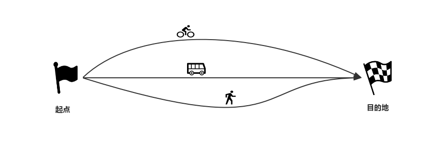

从一个地点去另一个地点，你可以选择步行、出租车、公交车等各种交通工具，最终目的是到达目的地。每一种交通工具，还可以选择多种路线方案，避开拥堵、走捷径等等，每一种方案都是一种策略，这就是策略模式。
定义

简单来说，策略模式（Strategy）是一种过程不同、结果相同或者相似的设计模式。在程序设计中，为某个行为（例如查找、排序）定义一系列的算法并封装起来提供给调用者，最终由调用者决定使用哪一种，这里每一个算法都是一种策略，为了保证策略的一致性，通常会用一个抽象的策略类来定义算法，具体的细节由每一个策略类实现。
实例
策略模式由三个角色组成
- 上下文
- 策略抽象
- 策略实现
以排序为例，传入一个未排序数字数组，最终返回有序数组，先定义策略抽象
1 | public interface SortStrategy { |
写三个排序算法：冒泡法、选择法、插入法
1 | //冒泡排序 |
1 | //选择排序 |
1 | //插入排序 |
定义上下文
1 | public class Context { |
测试类
1 | public class StrategyTest { |
输出结果：
1 | 冒泡排序结果:[1, 2, 3, 4, 5, 6, 7, 8, 9] |
适用场景
策略模式是对算法的封装，它把算法和结果分开，调用者需要知道都有哪些策略，而不必关心具体的实现细节，从而达到调用不同策略产生不同行为的结果。策略模式把选择权交给调用者，并且允许调用者自由替换，大大提高了灵活性，策略模式通常应用在以下场景：
- Java的比较器Comparator；
- 各种排序、查找、加密算法的封装；
- 调用者只关心结果，不关心过程；
- 存在大量if…else判断的复杂逻辑场景
总结
策略模式的优点：
- 算法封装，完全符合“开闭原则”，不修改代码的基础上也可以更换实现策略，非常灵活；
- 避免过多的if…else造成可读性差的烂代码
缺点：
- 调用者必须知道所有的策略且策略要明确告知调用者运行结果；
- 一定程度上增加了类的数量；